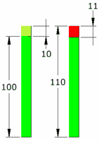

Percentage Change
Subtract the old from the new, then divide by the old value. Show that as a Percentage.
Comparing Old to New
Change: subtract old value from new value. Example: You had 5 books, but now have 7. The change is: 7−5 = 2. |
|
Percentage Change: show that change as a percent of the old value ... so divide by the old value and make it a percentage: So the percentage change from 5 to 7 is: 2/5 = 0.4 = 40% |
Percentage Change is all about comparing old to new values. See percentage change, difference and error for other options.
How to Calculate
Here are two ways to calculate a percentage change, use the one you prefer:
Method 1
| Step 1: Calculate the change (subtract old value from the new value) |
| Step 2: Divide that change by the old value (you will get a decimal number) |
| Step 3: Convert that to a percentage (by multiplying by 100 and adding a "%" sign) |
| Note: when the new value is greater then the old value, it is a percentage increase, otherwise it is a decrease. |
Method 2
| Step 1: Divide the New Value by the Old Value (you will get a decimal number) |
| Step 2: Convert that to a percentage (by multiplying by 100 and adding a "%" sign) |
| Step 3: Subtract 100% from that |
| Note: when the result is positive it is a percentage increase, if negative, just remove the minus sign and call it a decrease. |
Examples
Example: A pair of socks went from $5 to $6, what is the percentage change?
Answer (Method 1):
- Step 1: $5 to $6 is a $1 increase
- Step 2: Divide by the old value: $1/$5 = 0.2
- Step 3: Convert 0.2 to percentage: 0.2×100 = 20% rise.
Answer (Method 2):
- Step 1: Divide new value by old value: $6/$5 = 1.2
- Step 2: Convert to percentage: 1.2×100 = 120% (i.e. $6 is 120% of $5)
- Step 3: Subtract 100%: 120% − 100% = 20%, and that means a 20% rise.
Another Example: There were 160 smarties in the box yesterday, but now there are 116, what is the percentage change?
Answer (Method 1): 160 to 116 is a decrease of 44. Compared to yesterday's value: 44/160 = 0.275 = 27.5% decrease.
Answer (Method 2): Compare today's value with yesterday's value: 116/160 = 0.725 = 72.5%, so the new value is 72.5% of the old value.
Subtract 100% and you get −27.5%, or a 27.5% decrease.
Why Compare to Old Value?
Because you are saying how much a value has changed.
Example: Milk was $2, now it is $3, did it rise $1 compared to $2 or $3 ?
We compare to the original $2 value, so we say the change is $1/$2 = 0.5 which is a 50% increase.
The Formula
You can also put the values into this formula:
New Value − Old Value |Old Value| × 100%
(The "|" symbols mean absolute value, so negatives become positive)
Example: There were 200 customers yesterday, and 240 today:
240 − 200 |200| × 100% = 40 200 × 100% = 20%
A 20% increase.
Example: But if there were 240 customers yesterday, and 200 today we would get:
200 − 240 |240| × 100% = −40 240 × 100% = −16.6...%
A 16.6...% decrease.
How to Reverse a Rise or Fall
Some people think that a percentage increase can be "reversed" by the same percentage decrease. But no!
Example: 10% of 100
A 10% increase from 100 is an increase of 10, which equals 110 ...
... but a 10% reduction from 110 is a reduction of 11 (10% of 110 is 11)
So we ended up at 99 (not the 100 we started with)

What happened?
- 10% took us up 10
- Then 10% took us down 11
Because the percentage rise or fall is in relation to the old value:
- The 10% increase was applied to 100
- But the 10% decrease was applied to 110
How to do it properly
To "reverse" a percentage rise or fall, use the right formula here:
| To Reverse: | Use this Percent: | Example 10% |
|---|---|---|
| An "x" percent rise: | x/(1+x/100) |
10/(1+10/100) = 10/(1.1) = 9.0909... |
| An "x" percent fall: | x/(1−x/100) |
10/(1−10/100) = 10/(0.9) = 11.111... |
| Or use this handy-dandy calculator (just type in a value and click in the other box) |